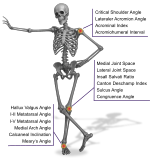
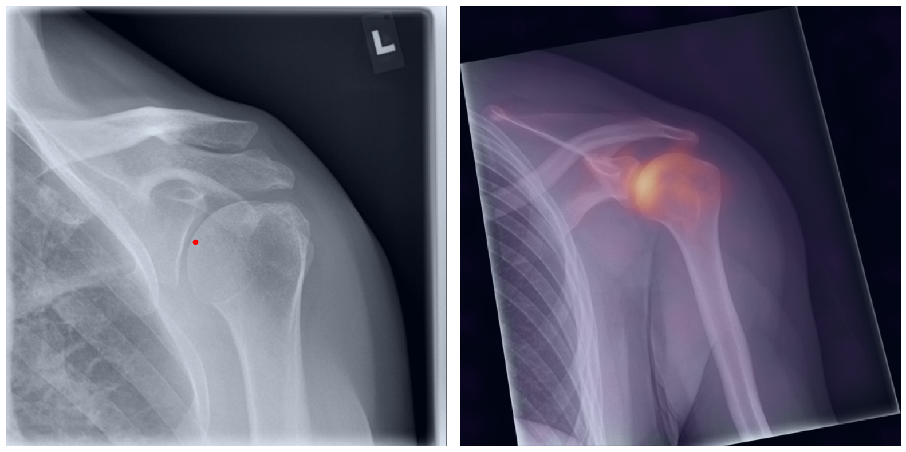
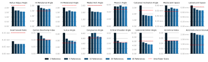

An Artificial Intelligence Framework for Universal Landmark Matching and Morphometry in Musculoskeletal Radiography
Dennis Eschweiler1,2,*Eneko Cornejo Merodio1,2Felix Barajas Ordonez2Aleksandar Lichev1,2Nikol Ignatova1,2Marc Sebastian von der Stück2Christiane Kuhl2Daniel Truhn1,2Sven Nebelung1,2,*
1Lab for Artificial Intelligence in Medicine, Department of Diagnostic and Interventional Radiology, University Hospital RWTH Aachen, Aachen, Germany2Department of Diagnostic and Interventional Radiology, University Hospital RWTH Aachen, Aachen, Germany*deschweiler@ukaachen.de, snebelung@ukaachen.de
Referencea point is moved by handTargetthe matched point follows in real time
Once the dense correspondence between a reference and a target radiograph is established, landmark
matching runs in real time. A set of landmarks defined once on the reference can be mapped onto every radiograph of a cohort,
and the measurements built on them follow automatically.
1annotated reference radiograph to start from
0anatomy-specific training
16measurements in shoulder, knee and foot
2.15 mmmean landmark error with 40 reference radiographs
Abstract
This study presents a zero-shot artificial intelligence (AI)-based approach for automated landmark matching in
radiographs, designed to improve scalability and reliability in deriving musculoskeletal (MSK) measurements across
various anatomic regions and conditions. Key anatomic landmarks were manually identified under expert supervision,
building the basis to automatically derive pertinent angle and distance measurements. Using one patient's radiograph
as a reference, a robust AI-based feature matching approach establishes dense matches between the reference and
unseen target images. Reference landmarks are transferred along the dense matching, resulting in precise landmark
placement and automated calculation of MSK measurements within an entire patient cohort. The results demonstrate
versatile and robust application without requiring anatomy-specific training, while radiographs with
orthopedic implants remain challenging for some measurements.

A single AI framework for universal application
From head to toe
Artificial intelligence (AI) has shown great potential in assisting radiologists with
musculoskeletal (MSK) assessments across various anatomical regions1,2,3,4.
However, most existing tools are narrowly tailored for specific anatomies or rely on segmentation-based methods
as a basis. To address these limitations, we propose a versatile and generalist AI-based approach for landmark
matching. In contrast to typical generalist landmark matching approaches that depend on automatically identified,
optimally descriptive landmarks5,6,7,
our use-case has to be based on manually selected landmarks tailored for MSK measurements.
As these landmarks are potentially suboptimal for precise matching, we employ an AI-based
method8 that first
performs multi-scale dense image matching between the reference and target images independently of the
landmarks. Landmark positions are then transferred to the target image along these correspondences. The approach
is anatomy-agnostic, so the same backbone model serves a wide range of anatomical regions and MSK
measurements. For more detailed information we refer to our paper.
ShoulderAP
KneeAP
Kneelateral
Kneeaxial
FootAP
Footlateral
How it works
Swipe to see the whole figure.
1Annotate once
An expert places the landmarks of the measurements on a single reference
radiograph. The rest of the cohort stays unannotated.
2Match densely
One shared encoder of transformers and convolutional layers reads both
radiographs at multiple scales, and every position of the reference is matched to the target, independently of
the landmarks.
3Transfer and measure
The landmarks follow the dense matches to every target, where the
redundancy of the matching stabilizes their final position. The measurements follow automatically.
Schematic, drawn from the lateral-knee measurement definitions of the paper. The landmarks
and the Insall-Salvati ratio stand in for every view and measurement.
Inference service Self-hosted
The pipeline also runs as a Docker service on your own GPU machine, with a REST endpoint and an MCP server for AI
agents. The Radiograph
Morphometry Agent takes all of its measurements from it.
Visualizing the inner workings
Behind the curtain
The process of establishing a dense match between two images relies on abstract feature
representations for each position in both the reference and target images. To better understand which information
is encoded by the AI, we examined the feature similarities between a specific position within the reference image
and the entire target image. Our findings show that the AI captures both semantic and texture features. The matching
process utilizes this encoded information, along with precise positional data, to create a reliable mapping between
the images.

Referencethe queried positionTargetfeature similarity to it, bright is similar
Annotation through imitation
From novice to expert
Our findings indicate that the selection of the reference radiograph significantly influences the
outcome, as each radiograph is unique and often presents highly superimposed structures. This can introduce ambiguity
regarding the precise position and the intended anatomical structure to be marked by the landmark. To enhance the
reliability of the matching process, multiple reference radiographs can be used to establish a more robust alignment
based on overall agreement. Increasing the number of reference radiographs systematically improves the framework's
ability to account for variations between radiographs, leading to a steady improvement in matching accuracy as
demonstrated by the results below.

Swipe to see the whole figure.
Accompanying & downstream projects
Built on this framework
41,000+ radiographs
AI challenges the reference standards for lateral knee morphometry
Many clinical reference values were fixed decades ago from small patient groups and never tested at
scale. Using automated AI landmark measurement on more than 41,000 lateral knee radiographs from two independent
health systems, we show that the most widely used patellar height threshold systematically misclassifies knees
without reported imaging finding, demonstrating how automated morphometry can re-evaluate inherited diagnostic
standards.
The contralateral knee is widely used as a reference in patellofemoral radiography, but how much
side-to-side difference a routine radiograph can actually resolve has never been quantified. Using automated AI
landmark measurement on more than 11,000 paired knee radiographs from a multi-site health system, we show that
side-to-side differences in patellofemoral indices fall at the resolution floor of radiography itself, defining
index-specific tolerance intervals within which the contralateral knee is a usable reference and beyond which it
is not.
Bringing automated morphometry into everyday reporting, an LLM agent works a radiograph case step by
step and drafts the structured report, taking every measurement from the validated morphometry service and every
reference range from a guideline corpus instead of its own priors, while the radiologist stays in the loop to
correct landmarks, wording and thresholds.
@article{eschweiler2026RadiographMatching,
title={An Artificial Intelligence Framework for Universal Landmark Matching and Morphometry in Musculoskeletal Radiography},
author={Dennis Eschweiler and Eneko Cornejo Merodio and Felix Barajas Ordonez and Aleksandar Lichev and Nikol Ignatova and Marc Sebastian von der St{\"u}ck and Christiane K. Kuhl and Daniel Truhn and Sven Nebelung},
journal={European Radiology},
pages={1--14},
year={2026},
doi={10.1007/s00330-026-12555-y}
}
The dense matching builds on RoMa
by Edstedt et al. (CVPR 2024). If you use the framework, please consider citing it as well.